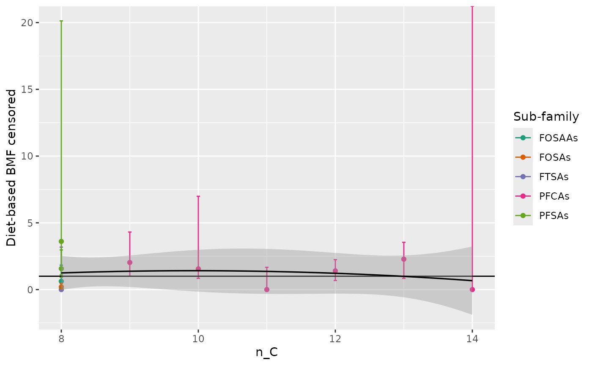
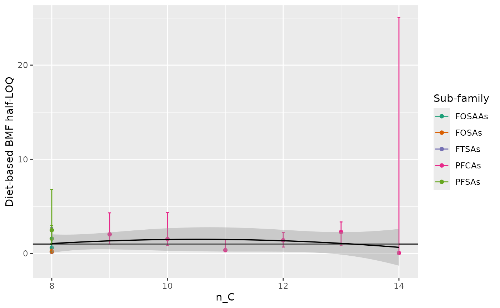
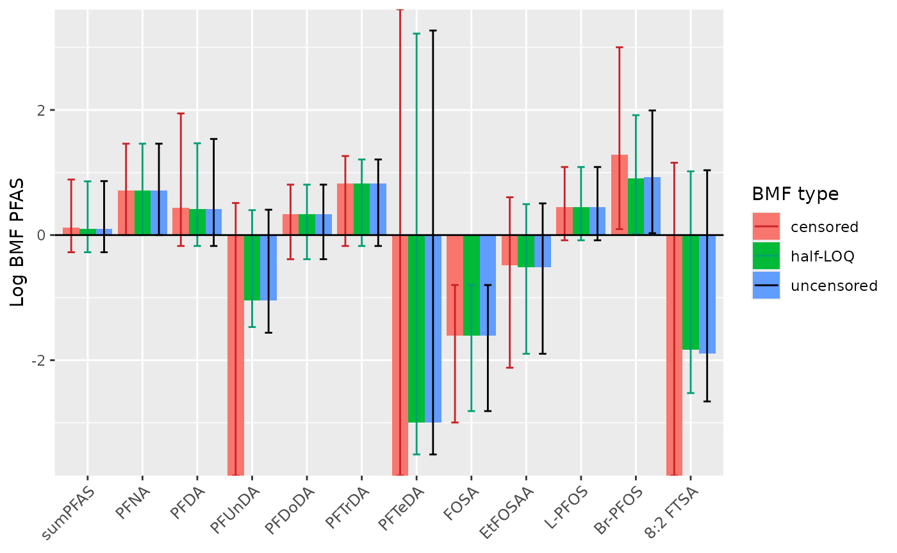

0. Subdatasets for PFAS in ng/gdw
# rstudioapi::navigateToFile("../data-raw/4.0.BMF_diet_nondetects_subdataset.R")1. BMF censored
Computation
# rstudioapi::navigateToFile("../data-raw/4.1.BMF_diet_nondetects_censored.R")
DT::datatable(BMF_diet_PFAS_ng_gdw_censored)Graph BMFs per PFAS
ggdata_BMF_diet_PFAS_ng_gdw_censored <- BMF_diet_PFAS_ng_gdw_censored |>
filter(PFAS != "sumPFAS") |>
left_join(contam_prop, by = c("PFAS" = "chemical"))
ggplot_BMF_diet_PFAS_ng_gdw_censored <- ggdata_BMF_diet_PFAS_ng_gdw_censored |>
ggplot() +
aes(x = n_C, y = BMF_diet_median, colour = sub_family_TAG) +
geom_point() +
geom_errorbar(aes(ymin = BMF_diet_min, ymax = BMF_diet_max), width = 0.05) +
geom_hline(yintercept = 1) +
scale_color_manual(values = my_colors) +
labs(color = "Sub-family", y = "Diet-based BMF censored") +
geom_smooth(method = "lm", formula = y ~ poly(x, 2), se = TRUE, color = "black", linewidth = 0.6) +
stat_poly_eq(
inherit.aes = FALSE,
data = ggdata_BMF_diet_PFAS_ng_gdw_censored,
aes(x = logKow, y = BMF_diet_median,
label = paste(..eq.label.., ..rr.label.., ..p.value.label.., sep = "~~~")),
formula = y ~ poly(x, 2, raw = TRUE), parse = TRUE,
label.x = "left",
label.y = "top"
)
ggplot_BMF_diet_PFAS_ng_gdw_censored## Warning: The dot-dot notation (`..eq.label..`) was deprecated in ggplot2 3.4.0.
## ℹ Please use `after_stat(eq.label)` instead.
## This warning is displayed once every 8 hours.
## Call `lifecycle::last_lifecycle_warnings()` to see where this warning was
## generated.## Warning: Removed 11 rows containing non-finite outside the scale range
## (`stat_poly_eq()`).
ggsave(
filename = "../inst/results/BMF_computation_PFAS_ng_gdw/1.ggplot_BMF_diet_PFAS_ng_gdw_censored.jpg",
plot = ggplot_BMF_diet_PFAS_ng_gdw_censored, width = 18, height = 10, units = "cm"
)## Warning: Removed 11 rows containing non-finite outside the scale range
## (`stat_poly_eq()`).2. BMF half LOQ
Computation
# rstudioapi::navigateToFile("../data-raw/4.2.BMF_diet_nondetects_LOQ.R")
DT::datatable(BMF_diet_PFAS_ng_gdw_halfLOQ)Graph BMFs per PFAS
ggdata_BMF_diet_PFAS_ng_gdw_halfLOQ <- BMF_diet_PFAS_ng_gdw_halfLOQ |>
filter(PFAS != "sumPFAS") |>
left_join(contam_prop, by = c("PFAS" = "chemical"))
ggplot_BMF_diet_PFAS_ng_gdw_halfLOQ <- ggdata_BMF_diet_PFAS_ng_gdw_halfLOQ |>
ggplot() +
aes(x = n_C, y = BMF_diet_median, colour = sub_family_TAG) +
geom_point() +
geom_errorbar(aes(ymin = BMF_diet_min, ymax = BMF_diet_max), width = 0.05) +
geom_hline(yintercept = 1) +
scale_color_manual(values = my_colors) +
labs(color = "Sub-family", y = "Diet-based BMF half-LOQ") +
geom_smooth(method = "lm", formula = y ~ poly(x, 2), se = TRUE, color = "black", linewidth = 0.6) +
stat_poly_eq(
inherit.aes = FALSE,
data = ggdata_BMF_diet_PFAS_ng_gdw_halfLOQ,
aes(x = logKow, y = BMF_diet_median,
label = paste(..eq.label.., ..rr.label.., ..p.value.label.., sep = "~~~")),
formula = y ~ poly(x, 2, raw = TRUE), parse = TRUE,
label.x = "left",
label.y = "top"
)
ggplot_BMF_diet_PFAS_ng_gdw_halfLOQ## Warning: Removed 11 rows containing non-finite outside the scale range
## (`stat_poly_eq()`).
ggsave(
filename = "../inst/results/BMF_computation_PFAS_ng_gdw/2.ggplot_BMF_diet_PFAS_ng_gdw_halfLOQ.jpg",
plot = ggplot_BMF_diet_PFAS_ng_gdw_halfLOQ, width = 18, height = 10, units = "cm"
)## Warning: Removed 11 rows containing non-finite outside the scale range
## (`stat_poly_eq()`).4. BMF comparison
BMF_compare <- full_join(BMF_diet_PFAS_ng_gdw_censored_compare,
BMF_diet_PFAS_ng_gdw_halfLOQ_compare) |>
full_join(BMF_diet_PFAS_ng_gdw_uncensored_compare) ## Joining with `by = join_by(PFAS, min, median, max, type)`
## Joining with `by = join_by(PFAS, min, median, max, type)`
# full_join(BMF_TL_species_all_PCB_ng_glw_compare)
DT::datatable(BMF_compare)
ggplot_BMFs_compare <- ggplot(BMF_compare) +
aes(x = PFAS, y = log(median), fill = type) +
geom_col(position = "dodge") +
geom_errorbar(aes(ymin = log(min), ymax = log(max), colour = type),
position = position_dodge(width = 0.9),
width = 0.4) +
geom_hline(yintercept = 0) +
scale_color_manual(values = c("#CB2027", "#009E73", "black", "black")) +
labs(x = NULL, y = "Log BMF PFAS", fill = "BMF type", color = "BMF type") +
theme(axis.text.x=element_text(size=9, angle=45, hjust=1))
ggplot_BMFs_compare
ggsave(plot = ggplot_BMFs_compare,
filename = "../inst/results/BMF_computation_PFAS_ng_gdw/5.ggplot_BMFs_compare.jpg",
width = 22, height = 15, units = "cm")